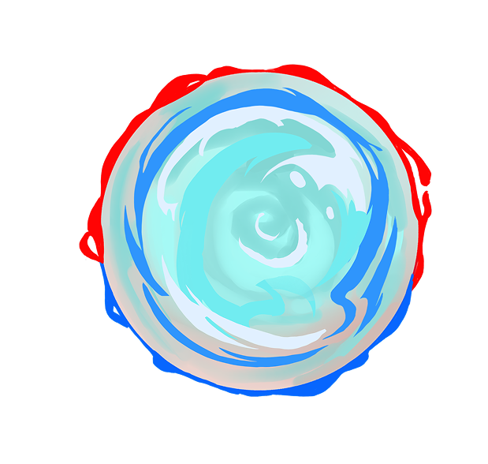

American Dream



click to enter
click to enter
1930s
Scroll
The whispers of the American Dream began in the 1930s, where individuals seeked personal fulfillment and self-expression; the rhetoric of the American Identity
Amid economic instability from the 1929 Stock Market Crash and a shifting political climate with President Roosevelt’s New Deal looking for recovery and reform, people held tightly to hope, refusing to let go of the belief in a better future.
There was a shift from pursuing a path of wealth to one of stability to trying to find a way for resilience and recovery.
James Truslow Adams coined the phrase “The American Dream” in his 1931 book The Epic of America as an idealization of life in America. But what does this mean to someone of the past?
202X
Transformed from American stability to one of American exceptionalism–a narrative of shared experiences but ambiguous to make it seem it can be applied to all. However, the mental model has shifted from collective growth to one of individual growth, how one can achieve their American Dream. America is a land of possibility and opportunity, allowing for social mobility and determining your own fate through hard work.
But the dream comes at a cost, literally.
As society places more focus on individual success, people are more likely to feel disconnected and anxious, with shared values and a sense of belonging gradually fading away.
James Truslow Adams warned of a future where workers blindly follow a capitalist system, convinced it will lead to success, yet unaware of how it often exploits them. Today, that warning rings true.
XXXX
Picture a future where your hard work truly matters, where no matter where you come from, your effort is respected and rewarded. Imagine a country where everyone has enough to eat, where jobs are not just dreams but real chances to build a better life, and where nobody is left struggling alone. This is not just a hope, it is a vision of a fair America where your voice counts, your family thrives, and your sacrifices are seen and honored. Together, we can build that future.
In this future America, fairer redistribution and financial reform create stability and support lasting growth. This new system ensures opportunity and shared prosperity for everyone, building a stronger, more secure nation.